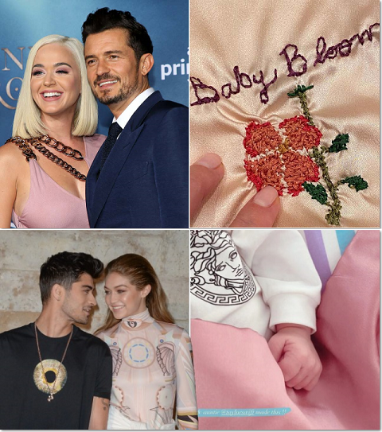

Green was the color of the grass
Where I used to read at Centennial Park
I used to think I would meet somebody there
Teal was the color of your shirt
When you were sixteen at the yogurt shop
You used to work at to make a little money
Time, curious time
Gave me no compasses, gave me no signs
Were there clues I didn't see?
And isn't it just so pretty to think
All along there was some
Invisible string
Tying you to me?
Ooh
On your first trip to LA
You ate at my favorite spot for dinner
Bold was the waitress on our three year trip
Getting lunch down by the lakes
She said I looked like an American singer
Time, mystical time
Cuttin' me open, then healin' me fine
Were there clues I didn't see?
And isn't it just so pretty to think
All along there was some
Invisible string
Tying you to me?
Ooh
A string that pulled me
Out of all the wrong arms right into that dive bar
Something wrapped all of my past mistakes in barbed wire
Chains around my demons, wool to brave the seasons
One single thread of gold tied me to you Cold was the steel of my axe to grind
Cold was the steel of my axe to grind
For the boys who broke my heart
Now I send their babies presents

Gold was the color of the leaves
When I showed you around Centennial Park
Hell was the journey but it brought me heaven
Time, wondrous time
Gave me the blues and then purple pink skies
And it's cool, baby, with me
And isn't it just so pretty to think
All along there was some
Invisible string
Tying you to me?
Ooh
Hee
Ooh